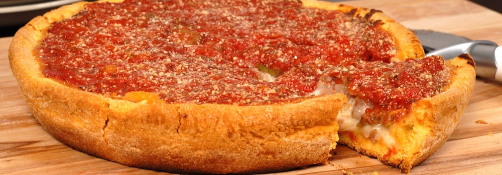

Chicago Pizza
Date: 23 Dec 2022
Chicago-style pizza usually refers to deep-dish pizza, which is a thick pizza baked in a pan and layered with cheese, fillings like meat and vegetables, and sauce–in that order. The crust is usually two to three inches tall and gets slightly fried due to the oil in the pan. The main distinction between deep-dish pizza and New York-style pizza or Neapolitan pizza is that, as the name suggests, the crust is very deep, creating a bulky pizza that is more similar to a pie than a flatbread. Although the entire pizza is very thick, the crust itself is thin to medium in thickness.
Deep-dish pizza was invented at the original location of Pizzeria Uno in Chicago in 1943. Some say it was invented by one of Pizzeria Uno’s founders, Ike Sewell, but others contend it was created by pizza chef Rudy Malnati and/or cook Alice May Redmond. Pizzeria Uno was originally known as The Pizzeria and then Pizzeria Riccardo (after another founder Ric Riccardo), but when Sewell and Riccardo opened Pizzeria Due a block away in 1955, they named their first shop Pizzeria Uno. Deep-dish pizza dough is made from wheat flour and sometimes semolina flour, giving the crust a noticeably yellowish hue. There is also corn oil or butter in the recipe, giving it that buttery, biscuit-like taste. Deep-dish pizza is baked in a round, steel pan that resembles a cake or pie pan. The dough is pressed up onto the sides of the pan, forming a basin for a thick layer of cheese and fillings. The pan is oiled to allow for easy removal and it also creates a fried effect on the edges of the crust. As for those fillings, they’re layered on in an inverted order, with the cheese on the bottom, any meat and vegetable toppings in the middle, and the tomato sauce on the top. This is to prevent the cheese from burning, due to the longer cooking time required for deep-dish pizzas. The tomato sauce is usually a chunky, uncooked version made from crushed canned tomatoes. Stuffed pizza may look the same from the outside, but the difference is clear once you cut into it. Like deep-dish pizza, a deep layer of dough forms a basin in a high-sided pan and the toppings and cheese are layered inside it. But in stuffed pizza, an additional layer of dough goes on top and is pressed to the sides of the crust, which is then covered with tomato sauce. The dough is also flakier and is usually made with canola oil instead of corn oil.